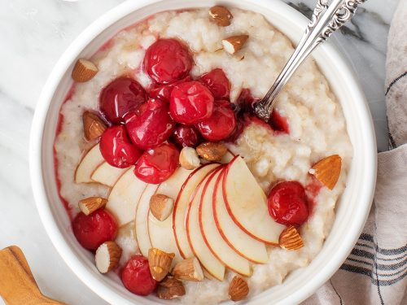

Oatmeal

Description
This healthy oatmeal ensures you get all the essential nutrients in one serving.
It’s perfect for starting your day off right or as a quick and nutritious lunch when you’re short on time.
Ingridients
- 1 dl of oats
- 1 banana
- Nuts of choice (e.g., walnuts, cashews, or almonds)
- 50g of blueberries
- Pinch of salt
- 1 dl of oat milk
Steps
- Place the oats in a bowl and add a pinch of salt. Mix well.
- Pour water into the bowl until it just covers the oats.
- Microwave the bowl for 2 minutes.
- Cut the banana into small pieces.
- Add the banana slices on top of the oatmeal.
- Sprinkle the blueberries over the oatmeal.
- Add the nuts, spreading them evenly.
- Top with a splash of oat milk.
- Mix everything together until well combined.